Destination finale Ushuaïa !
Nous y sommes !!! 17,848 kms plus loins et 7 mois après avoir quitté Anchorage, nous voici avec Antoine à Ushuaïa, très fiers d'avoir réussi le pari fou qu'on s'était fixé : traverser l'Amérique du Nord au Sud !!
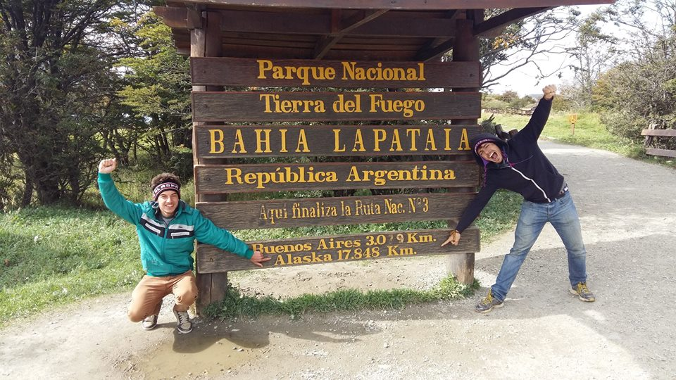
Au bout de la Ruta 3, nous voici au bout du monde et de notre aventure, bien loin de l'Alaska et avec des souvenirs pleins la tête!
Mais avant d'arriver à Ushuaia on a eu l'occasion de découvrir le dernier pays de notre épopée : l'Argentine ! Retour sur nos 15 jours passés au pays de la viande et du foot, où nous avons conclu en beauté notre aventure.
On entre en Argentine depuis Valparaíso en traversant les Andes pour arriver jusqu'à Mendoza. Mendoza est réputée en Argentine pour ses vins et un tour classique consiste à aller visiter les vignes de la région. Le coin est très beau mais après dix jours passés à travailler dans une vigne au Chili on ne s'attarde pas trop et on file directement à Córdoba où nous sommes attendus pour le week end par la famille Prina, des amis de mon amie Emma qui ont gentiment accepté de nous recevoir.
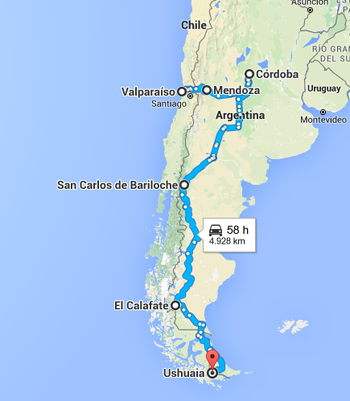
Notre itinéraire en Argentine
On est donc accueilli par Ana, Daniel et leurs 3 enfants Andrea, Carla et Dario qui ont à peu près notre âge, à Córdoba. Leur accueil résonne encore dans nos mémoires tant ils se sont montrés aux petits soins pour nous. Le premier jour Andrea et Dario nous font visiter le centre ville de Córdoba, puis Ana nous emmène dans la sierra, les montagnes environnantes où on a vue sur des lacs qui font un peu penser à la Suisse. Le lendemain on part avec Ana, Daniel et Dario visiter le musée Rocsen. Une expérience totalement unique car le musée est très particulier. Il rassemble quelques 51,000 objets en tout genre : moteurs de voiture, vieilles bicyclettes, animaux empaillés, timbres, meubles antiques, vieilles caméras ou encore momies... A chaque nouvelle pièce on se demande sur quoi on va tomber :)
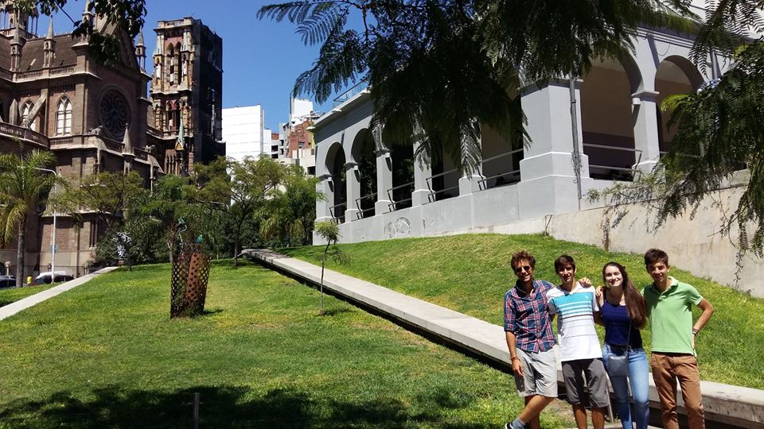
Visite de Córdoba avec Andrea et Dario
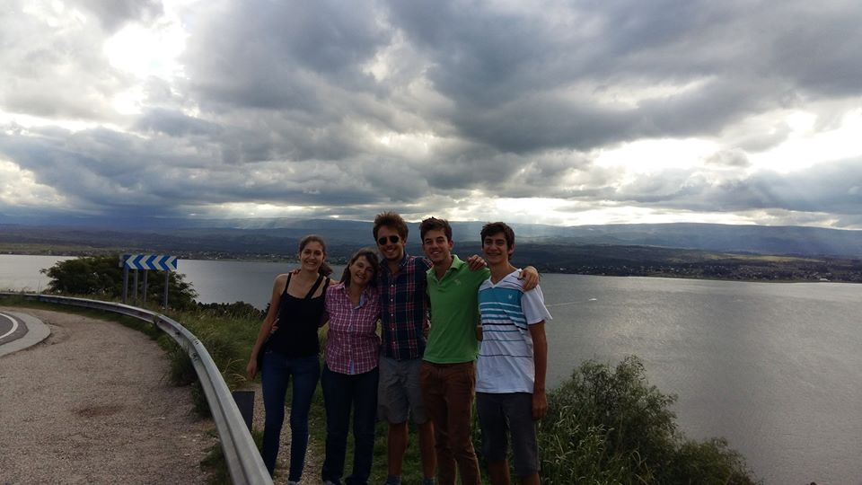
Visite de la région avec Ana, Dario et Carla
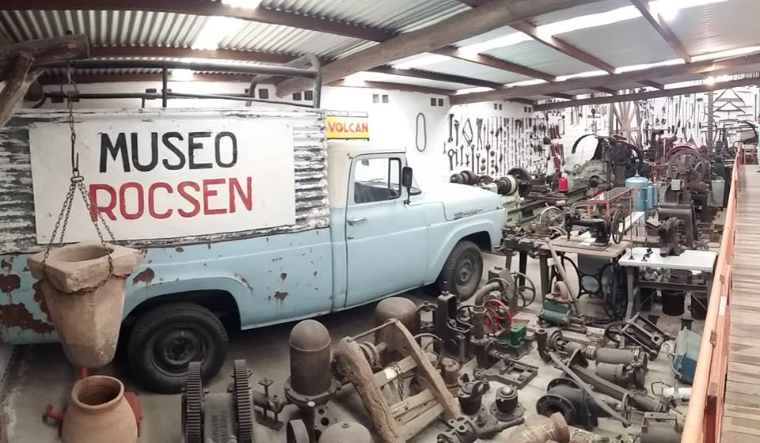
Passage par le musée Rocsen, un musée de... choses en tout genre!
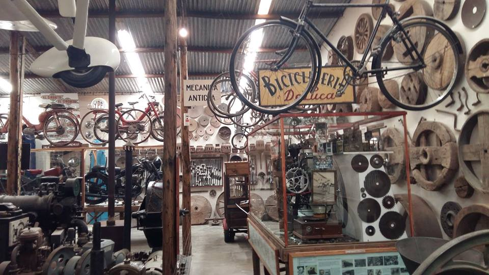
Vieilles bicyclettes, meubles antiques, animaux empaillés... il serait probablement plus rapide de faire la liste des objets qui ne sont PAS au Musée Rocsen :)
Malheureusment après trois jours passés en compagnie des Prina on doit déjà partir. Descendants d'italiens, les Prina nous ont donné l'impression de plonger au coeur d'une famille typique argentino-italienne. On parle avec les mains. On mange bien et la nourriture est importante : la viande évidemment mais aussi le choripan, les alfajoles et bien sur le mate, la boisson n°1 en Argentine! Antoine est aux anges, il peut manger beaucoup et bien :) Le foot est aussi omniprésent et n'est pas reservé aux garcons. Demandez leur qui de Maradona ou de Messi est le plus fort et vous animez un débat pendant plusieurs heures! Et n'essayez pas de mentionner le nom de Pelé dans la discussion! Sur ce point, c'est moi qui suis aux anges, le passage aux US et la passion pour le "foot" US et le baseball m'avait laissé bien circonspect...
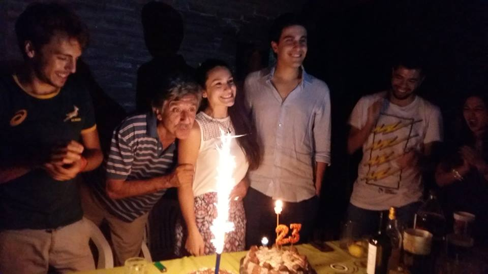
On fête l'anniversaire d'Andrea avec toute la famille et les amis!
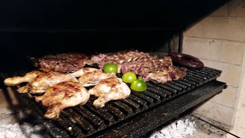
On profite d'un asado, de la viande grillée, le plat le plus typiquement argentin
Après Cordoba nous prenons l'avion jusqu'à Bariloche, où nous entrons enfin dans la mythique région de Patagonie! On y reste 3 jours le temps de faire plusieurs belles balades dans les environs. Dès qu'on prend un peu de hauteur on peut profiter de vues magnifiques sur les nombreux lacs de la région. Ce retour rando et nature nous enchante et nous rappelle aux bons souvenirs du Canada.
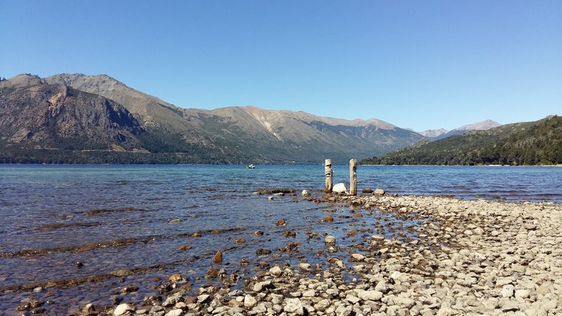
Autour de Bariloche on peut voir de nombreux lacs superbes
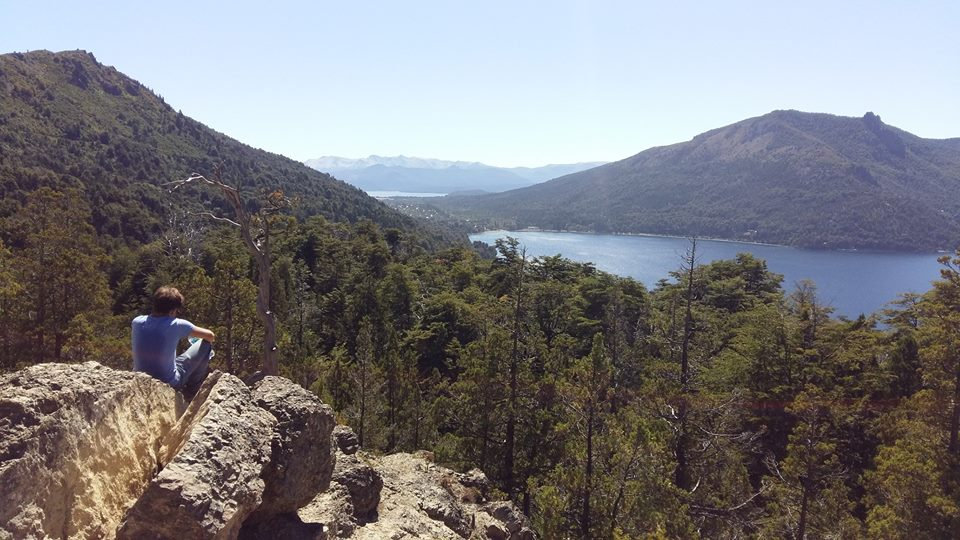
Dès qu'on prend un peu de hauteur on en prend plein la vue!
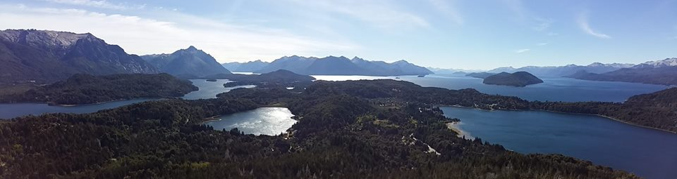
Du haut du Cerro Campanario on bénéficie d'un panorama sur toute la région
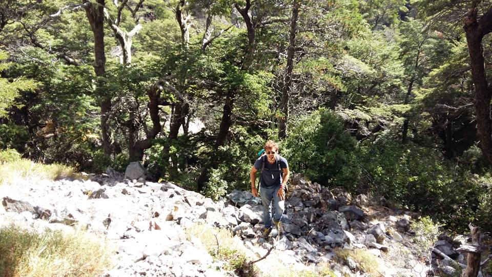
Les randos nous rappellent aux bons souvenirs de nos excursions dans les Rocheuses au Canada
Direction ensuite El Calafate, encore plus au sud. Nous y restons 2 jours le temps d'aller voir le glacier du Perito Moreno. Une merveille de la nature, véritablement impressionante! Contrairement aux glaciers du reste du monde le Perito Moreno ne fond pas et est très actif. Chaque jour il grandit en même temps que des blocs de glace s'en détachent pour retomber dans l'eau avec fracas. A deux heures près on aurait même pu assister à l'effondrement le plus impressionant qui soit arrivé depuis... 2012! Le Monde en a même fait un article avec une vidéo où l'où voit une arche de glace s'effondrer. Quoi qu'il en soit le Perito Moreno ne nous a pas laissé de glace ;)
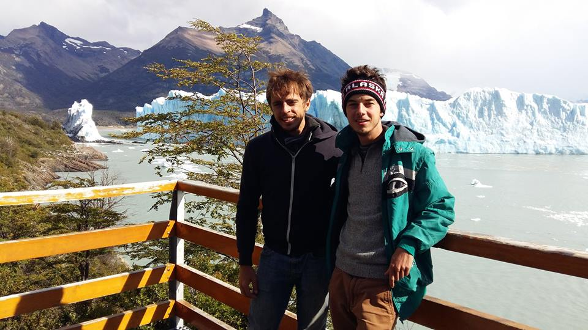
Pose devant le glacier du Perito Moreno
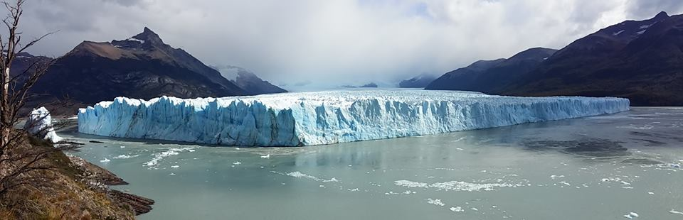
Le glacier est véritablement impressionant!!
Une dernière journée de bus nous sépare de notre destination finale : Ushuaïa! Départ à 9 heures du matin de Río Gallegos, on repasse du coté chilien pour traverser le détroit de Magellan à bord d'un ferry, puis de nouveau du côté argentin pour finalement arriver à 21h en vue d'Ushuaïa!! Ca y est, on l'a fait!!
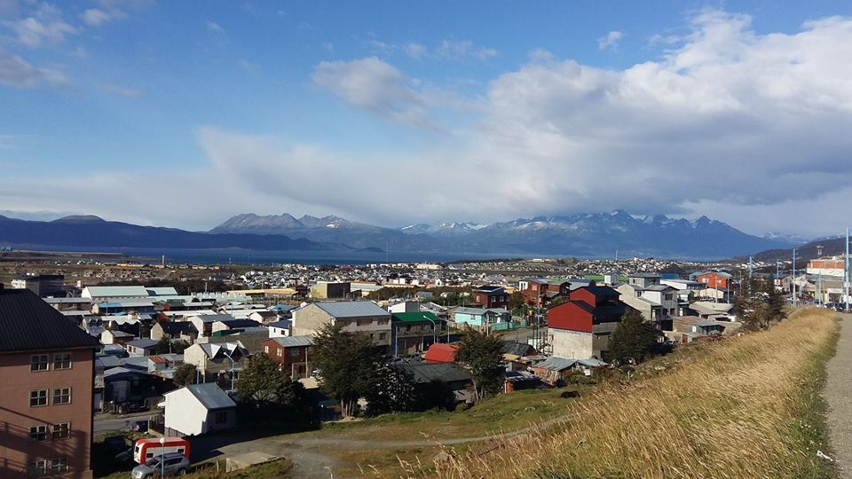
Enfin arrivés à Ushuaïa!!
On passe 3 jours à Ushuaïa. On rencontre Monica Obreque qui est à la tête du réseau de distribution d'eau pour la région pour la dernière interview de notre voyage. Monica et son mari Pablo nous emmènent ensuite faire un tour de la ville et du Parque Nacional de Tierra del Fuego. Les paysages sont exceptionnels et on apprécie tout particulièrement le fait de se retouver au bout du monde en sachant le chemin parcouru pour arriver jusqu'ici! On profite également de nos derniers instants tous les deux après 7 mois de voyage en commun. On passe notre dernière journée à escalader le glacier Martial d'où l'on bénéficie d'une belle vue sur Ushuaïa. Le 15 mars on prend un avion qui nous emmène à Buenos Aires et le lendemain Antoine retourne en France. Pour ma part je vais prolonger un peu le plaisir en Amérique latine les deux prochains mois en partant à la découverte du Brésil avant de rentrer à Paris :)
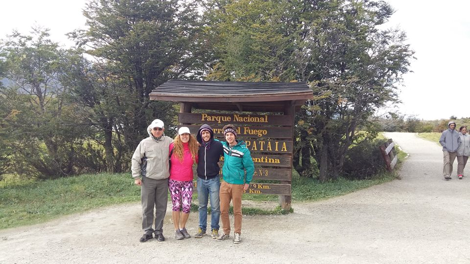
Monica et Pablo nous font faire un tour du Parc National de Terre de Feu
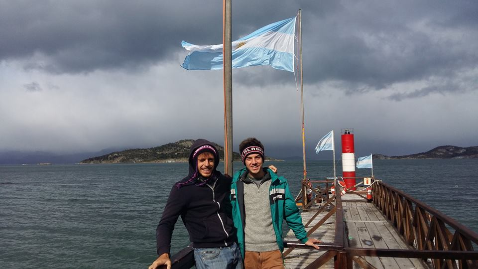
Nous voici au point le plus au sud de notre aventure!!
Il est encore un peu tôt pour vous livrer nos impressions sur le voyage mais pour ma part je suis simplement fier et content :) Aucun regret quant au fait que cela se termine, simplement heureux d'avoir pu partager toutes ces belles aventures avec Antoine!
L'autre sentiment qui domine c'est aussi la reconnaissance! Si on a réussi ce projet c'est grâce à toutes les personnes qui nous ont aidées sur notre chemin depuis Anchorage. Depuis Matt qui nous a hébergé à Anchorage, jusqu'à Monica qui nous a accueilli à Ushuaïa on aura rencontré plein de personnes formidables et on a encore du mal à réaliser tout ce qu'on a recu! Au delà des paysages fantastiques traversés, c'est vraiment la générosité de ces personnes rencontrées qui restera gravée dans ma mémoire.
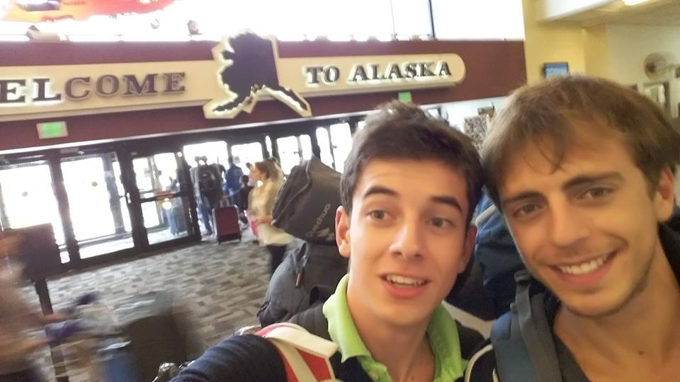
Il est loin le temps où l'on aterrissait en Alaska...
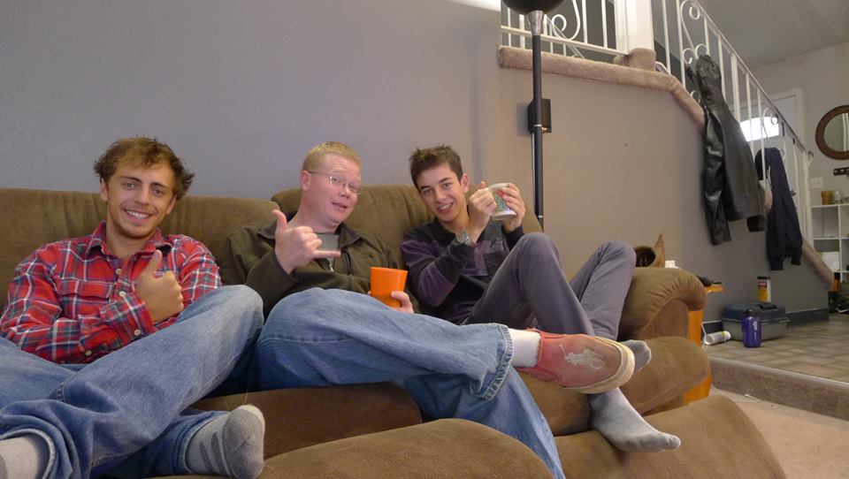
...Et pourtant on a l'impression que c'était hier que Matt nous accueillait chez lui à Anchorage!
Il ne s'agit pas de faire une liste à rallonge de remerciements à la manière d'une cérémonie des Oscars mais je tiens aussi à remercier nos parents qui nous ont beaucoup soutenu tout au long de l'aventure. Ca nous aidait beaucoup de savoir qu'ils nous encourageaient, parlaient de notre projet autour d'eux et nous disaient même que nos aventures leurs permettaient de voyager à travers nous.
On remercie aussi pour finir tous ceux qui ont participé à notre cagnotte Leetchi. On espère que toutes les cartes postales sont ou vont bientôt arriver, et bien sûr vous tous qui nous avez lu et suivi!
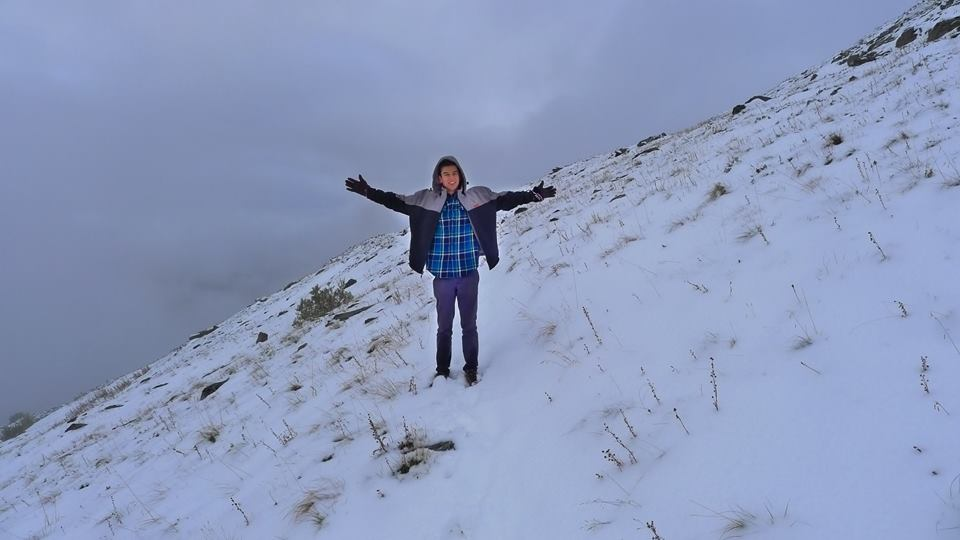
Un grand MERCI à tous !!
Et maintenant LE moment que vous attendez tous, le dernier jeu-concours d'Aquamerica!! Les observateurs les plus fins auront remarqué que depuis le début chacun de nos titres d'article comporte une référence cinématographique... saurez vous toutes les retrouver?? Pour rappel voici l'ensemble des titres :
- 1 - Alaska, welcome into the wild
- 2 - Canada, sur la route à la roots
- 3 - From Vancouver to the Rocky
- 4 - Montana : il était une fois dans l'Ouest
- 5 - Montana/Utah : pour quelques kilomètres de plus
- 6 - South by Southwest, à l'assaut de la Californie et fin du road trip
- 7 - Misión México
- 8 - L'étrange Noël au pays du dieu Chac
- 9 - Colombie : hiver sous les tropiques
- 10 - Équateur : E... Comme Icare
- 11 - Pérou : this is the Andes
- 12 - También la Bolivia
- 13 - Chili con Carménère
- 14 - Destination finale Ushuaïa
Comme d'habitude envoyez vos réponses à contact@aquamerica.fr en précisant pour chaque titre le nom du film et du réalisateur. Celui ou celle qui trouve le plus de bonnes réponses gagnera le titre de "Grand Gagnant d'Aquamerica" :) et bien sûr l'ultime dédicace sur notre page Facebook !
Encore merci pour vos encouragements et à très vite à Paris ou ailleurs!
Grégoire